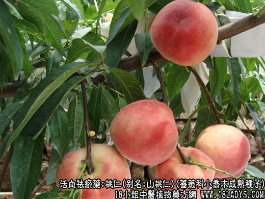
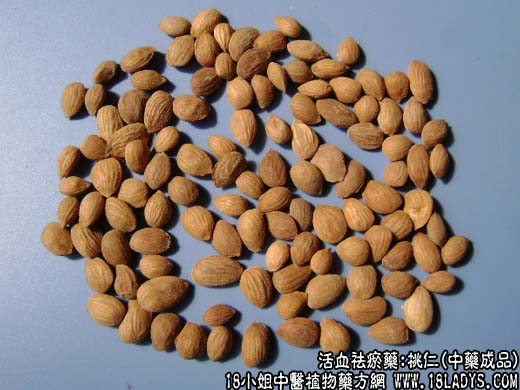

【中药概述】
桃仁，别名：山桃仁、桃核仁，为蔷薇科小乔木植物桃或山桃的成熟种子。苦、甘，平。归心、肝、大肠经。
1．活血祛瘀：用于血瘀经闭、痛经、症瘕痞块及跌打损伤等，如（桃仁四物汤、复元活血汤、（<千金方>桃仁汤）、（<傅青主女科>生化汤）。
2．消痈：用于肺痈、肠痈等，如（大黄牡丹皮汤、苇茎汤）。
3．润肠通便：用于肠燥便秘，如（润肠丸）。
注：这里说的桃仁，不是核桃仁（胡桃仁），而是普通桃子的核仁，注意区分。
【药物形态】
桃仁，呈扁长卵形，长1.2～1.8cm，宽O.8～1_2cm，厚O.2～O.4cm。表面黄棕色至红棕色，密布颗粒状突起。一端尖，中部膨大，另端钝圆稍偏斜，边缘较薄。尖端一侧有短线形种脐，圆端有颜色略深不甚明显的合点，自合点处散出多数纵向维管束。种皮薄，子叶2，类白色，富油性。气微，味微苦。山桃仁，呈类卵圆形，较小而肥厚，长约O.9cm，宽约O.7cm，厚约O.5cm。
【药效鉴别】桃仁破瘀之功胜于生新，多用于瘀血凝结之证，红花破血作用较弱，适于散在之瘀滞。
【药理作用】1.有抑制血凝作用。2.对呼吸中枢有镇静作用和镇咳作用。3.有滑肠作用。
【化学成分】含苦杏仁甙、苦杏仁酶、尿囊素酶、乳糖酶、维生素B1、挥发油、脂肪油及赤霉素A5、A32。
【用量用法】6——10g，捣碎，入煎剂，或入丸、散剂。
【附】桃叶（为蔷薇科木桃或山桃的叶）。苦，平。归脾、肾经。祛风湿，清热解毒，杀虫：用于风湿痹痛，头风头痛，及痈疮肿痛，湿疹，疟疾，妇女阴痒，癣疮等。
【临证应用】 1.阴道滴虫。用鲜桃叶30g，加水煮沸20分钟，冲洗，每日1次；2.萎缩性鼻炎。取桃叶1～2支，用手揉成棉球状，塞入鼻内10～20分钟，至分泌大量清涕，不能忍受时取出。
【化学成分】含糖甙、柚皮素、奎宁酸、番茄烃、鞣质等。
【附2】桃花（为蔷薇科木桃或山桃的花）。苦，平。入心、肝经。利水，活血，通便。治腹水水肿，脚气，痰饮，积滞，经闭，便秘，心腹冷痛等。5～10g，水煎服。
【临证应用】 <千金翼方>桃花100g，白芷30g，入1000g白酒中，浸泡1个月。每晚饮酒30g，并蘸取少许酒，在掌心擦热后按摩面部。1个月，用治面部黄褐斑，有美容健身的效果。
瘪桃干（为未成熟桃的干燥果实，又称碧桃干）。苦，微温。敛汗：适用于阴虚盗汗，咯血。治肺结核盗汗：碧桃干300g，水煎2次，第1次2小时，第2次1小时，合并2次药汁，每晚临睡前口服本品，7日1疗程。
本文解释权归介绍中草药名称的中药大全所有，本文地址：https://www.daquan.com/post/1990.html